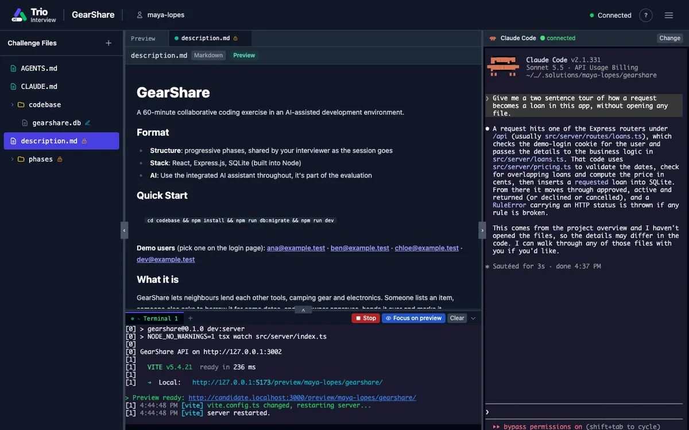
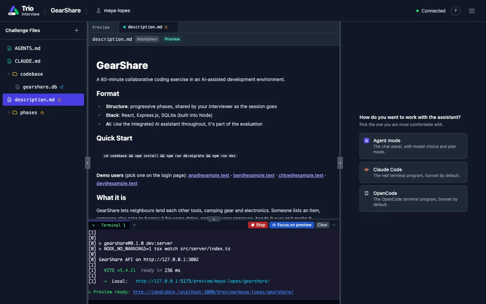
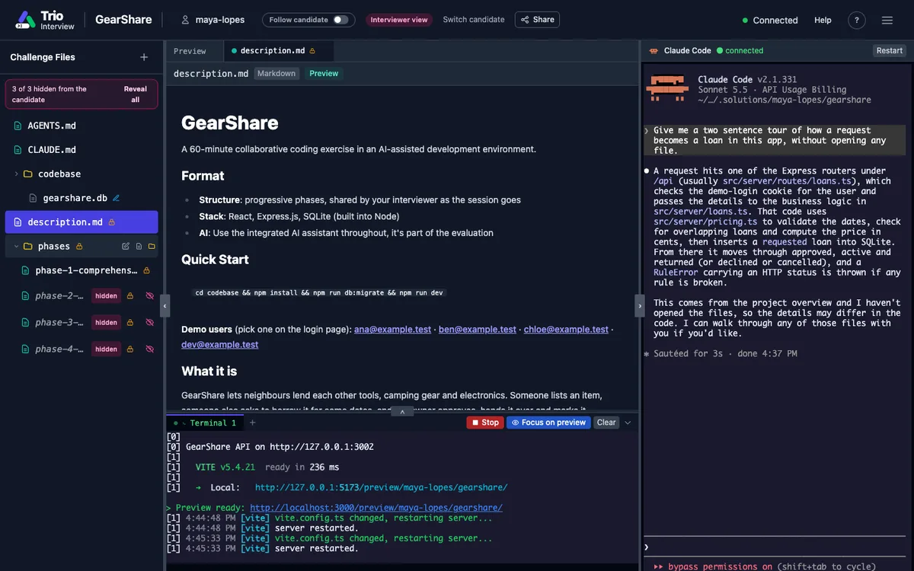

Interview with the tools
people really work with.
Trio Interview, say it "TREE-oh IN-ter-vyoo"
A live coding room that runs on your own machine. You send a link, the candidate opens it in a browser, and the two of you work in the same editor, terminal and preview while an AI assistant helps them in plain sight. The name is the three of you: the interviewer, the candidate and the assistant.
One room, both screens.
This is a small replica of the workspace running by itself. The candidate asks the assistant something, the interviewer's cursor moves in the same file, and a later phase is released when the candidate is ready.
Nothing here is a recording. It is a few lines of script moving real looking parts, which is also how the real room feels: what one person does shows up for the other.
The room should run where you can see it.
Hosted tools such as CoderPad, HackerRank and CodeSignal run the interview on their servers, and you can compare what they offer and what they ask for on their own sites. Trio Interview takes the other road. The room runs on your machine, the code is open so a company can read what runs its interviews, and your exercises stay yours.
There is nothing to subscribe to. The tool is free, and what it costs you is the assistant account you already pay for. The only thing that leaves your machine is the link, and for that you can use a free ngrok or Cloudflare tunnel, so a company can use it on an internal setup without paying anyone for a seat.
The maintenance belongs to the people who use it. If something is missing for your team, you can add it.

The assistant is part of the interview, not a secret.
The candidate picks how to work: the chat panel, or Claude Code or OpenCode in a real terminal. You allow which ones in a short setup, and you only watch. They run with a private configuration, so none of your own setup comes along, and everything they say to the assistant is saved for you to review.
See how someone prompts, checks the answer and fixes what is wrong, which says more than a ban on tools nobody bans at work.

Release the next phase when they are ready.
Exercises come in phases. The next ones wait out of the candidate's reach, in a folder their editor, terminal and assistant cannot see, and you reveal them one by one. You can follow the candidate's view or look around on your own, and edit files too, with both cursors visible.
Bring your own exercise with a skill that asks a few questions and writes the folder for you. There is a warm up and a small lending app with three bugs to find in the box.

Three commands, then a link.
You need Node 25 and Claude Code signed in. OpenCode and a tunnel are optional, and the setup checks all of it for you.
Check the machine
Installs dependencies and tells you what is missing.
make install
Say what is allowed
Pick the assistants, exercises and tunnel, once.
make config
Share the link
Pick an exercise and send the candidate the link it prints.
make start
The link carries a private part that is new for every interview, so an old link or a guessed address gets nothing. When you are done, make stop shuts it all down and make export zips the code and every conversation for review.
How people reach it
With ngrok the address stays the same and every assistant works. With cloudflared there is no account and the address is new each time, but the chat panel does not get its live answers through it, so the candidate should pick a terminal assistant. Setup asks which one you want and checks what it still needs.
What it is not
It is a guard rail, not a sandbox. A candidate's code runs as your user and nothing filters what it sends out. Use a machine and account without production credentials, supervise the interview, and for stronger isolation use a virtual machine or a container.
Help it get better.
The easiest first contribution needs no code: write an exercise from your own field and share it. After that there is a lot of room, from a second tunnel option to more assistants to better review of what candidates did. The guide shows the whole path with a recording, from branch to pull request, and small changes that do one thing are the easiest to review.